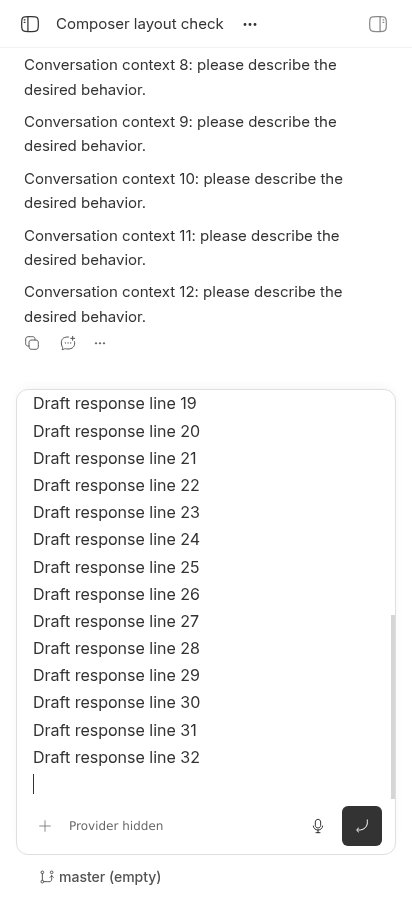
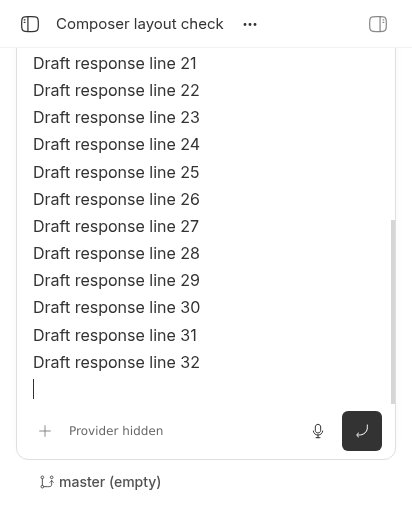
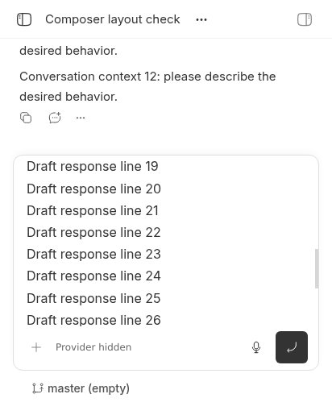

#7057 · Composer visible-height overflow
Verdict: REPRODUCED in the actual app with a simulated visual-viewport resize, repeated in a second clean checkout. Root-cause confidence: high for this layout mechanism. Real iOS keyboard behavior is not verified.
1. TL;DR
A long follow-up draft keeps its full-layout-viewport editor cap when the app's visible area shrinks. The editor takes 409.5 px even after the shell shrinks from 915 px to 520 px; the composer then starts at y = −6, behind the 48 px header. The conversation is no longer readable. This happens in the real source app without injected layout CSS or artificially enlarged editor content. A small shared-editor fix makes the editor 212 px high and moves the composer top to y = 192 under the same simulated resize.
2. Claims vs findings
| Claim | Finding | Evidence |
|---|---|---|
| A long follow-up draft can hide the conversation when the keyboard reduces visible space. | Verified for simulated visible-area reduction. | Two fresh dev stores and two trusted checkouts produced identical geometry. |
| The thread editor lacks an available-height override. | Verified. | The computed custom property was empty in both baseline runs; source removes it when maxHeight is absent. |
| The new-thread view has an additional host-size bound. | Verified in source; not separately driven in baseline browser runs. | RootComposeHome measures its region and supplies ComposerMaxHeightContext. |
| The same overflow occurs in message editing. | Unverified in UI. | The shared editor path is implicated, but no message-edit interaction was run. |
| Native iPhone home-screen keyboard behavior matches the simulation. | Unverified. | No iPhone or iOS Simulator was available; Chromium does not emulate an actual iOS keyboard. |
3. Environment
- Public repository get-bb/bb, trusted origin/main commit
82e14ef0d485403ed5c7f1406127a29ee3253ba6; remote commit identity checked against GitHub. - Linux, Node v22.19.0, pnpm 9.15.0, Chromium 156.0.8078.79. Touch/mobile viewport: 412 × 915 CSS px, scale 1.
- First app/server/daemon ports: 18949 / 26949 / 34949. Second: 11014 / 19014 / 27014. Separate newly created checkout-derived dev stores; no production records were used.
- Only synthetic project, environment, idle thread, and conversation events were inserted through repository DB helpers. No agent turn or provider account was needed.
- The proposed fix starts from newer trusted main
6f798b96874b5fe384839fccc7e67135d961bad9. Its only intervening change is an unrelated contributor allowlist update; composer source is identical to the recorded reproduction base.
4. Minimal reproduction
- In an isolated checkout at the recorded commit, install and build trusted repository code:
pnpm install --frozen-lockfile --prefer-offline pnpm exec turbo run build build:types --filter=@get-bb/plugin-sdk pnpm exec turbo run build pnpm dev
The explicit SDK preparation avoids a clean-checkout SDK-runtime build-order failure. Read the app URL, server URL, and data directory printed by the launcher. - Save this report's seed.mjs locally. Set DATA and SERVER to the fresh launcher's values; REPRO is the directory containing these downloaded evidence scripts. Seed only that fresh store:
FIXTURE=$(mktemp -d) git -C "$FIXTURE" init -q HOST=$(curl -fsS "$SERVER/api/v1/hosts" | node -e 'let data="";process.stdin.on("data",chunk=>data+=chunk);process.stdin.on("end",()=>console.log(JSON.parse(data)[0].id))') node --conditions=source --import tsx "$REPRO/seed.mjs" "$PWD" "$DATA/bb.db" "$HOST" "$FIXTURE"Record the returned projectId and threadId. - Open a local headless session using the BB Browser Automation plugin. Navigate its main page to the fresh app's
/projects/PROJECT_ID/threads/THREAD_ID. Set its viewport to{width:412,height:915,isMobile:true,hasTouch:true,deviceScaleFactor:1}. Wait for the synthetic conversation and follow-up editor. - Run reproduce.js with
bb browser-automation run SESSION --script-file "$REPRO/reproduce.js" --script-host HOST_ID --timeout 90s --json. The script types 32 lines using actual keyboard input and Shift+Enter, then overrides only the browser visualViewport.height boundary and dispatches resize. Repository code shrinks the shell itself. No issue-provided code or CSS was executed.
Expected: the editor tracks the visible viewport and leaves the conversation above the composer. Actual baseline: the editor retains the old viewport cap.
BEFORE {"viewportHeight":915,"visualHeight":915,"shellHeight":915,"editorHeight":409.5,"composerTop":389,"composerHeight":465.5,"availableHeight":"","shellHeightProperty":"100dvh"}
AFTER {"viewportHeight":915,"visualHeight":520,"shellHeight":520,"editorHeight":409.5,"composerTop":-6,"composerHeight":465.5,"availableHeight":"","shellHeightProperty":"520px"}
REPRODUCTION: editor remains larger than half the visible viewport
Complete repeatable browser reproduction:
const page = await browser.getPage("main");
await page.click("[data-promptbox] [contenteditable=true]");
await page.keyboard.down("Control");
await page.keyboard.press("a");
await page.keyboard.up("Control");
await page.keyboard.press("Backspace");
for (let index = 0; index < 32; index += 1) {
await page.keyboard.type("Draft response line " + (index + 1));
await page.keyboard.down("Shift");
await page.keyboard.press("Enter");
await page.keyboard.up("Shift");
}
const measure = () => page.evaluate(() => {
const editor = document.querySelector("[data-promptbox-editor-scroll]");
const composer = document.querySelector("[data-promptbox]");
const shell = document.querySelector("[data-app-content-shell]");
return {
viewportHeight: innerHeight,
visualHeight: visualViewport.height,
shellHeight: shell.getBoundingClientRect().height,
editorHeight: editor.getBoundingClientRect().height,
composerTop: composer.getBoundingClientRect().top,
composerHeight: composer.getBoundingClientRect().height,
availableHeight: getComputedStyle(editor).getPropertyValue("--composer-editor-available-height"),
shellHeightProperty: getComputedStyle(document.body).getPropertyValue("--bb-shell-height"),
};
});
await page.evaluate(() => new Promise(resolve => requestAnimationFrame(() => requestAnimationFrame(resolve))));
console.log("BEFORE", JSON.stringify(await measure()));
await page.shot({ type: "jpeg", maxEdge: 960, quality: 85 });
await page.evaluate(() => {
Object.defineProperty(window.visualViewport, "height", { configurable: true, value: 520 });
window.visualViewport.dispatchEvent(new Event("resize"));
});
await page.evaluate(() => new Promise(resolve => requestAnimationFrame(() => requestAnimationFrame(resolve))));
console.log("AFTER", JSON.stringify(await measure()));
await page.shot({ type: "jpeg", maxEdge: 960, quality: 85 });
const result = await measure();
if (result.editorHeight < result.visualHeight / 2) throw new Error("The oversized-editor reproduction no longer holds");
console.log("REPRODUCTION: editor remains larger than half the visible viewport");
undefined;


Images are real browser captures. The unrelated provider picker is visibly masked; after-resize images are cropped to the simulated visible area. No layout geometry was retouched.
5. Root cause
The shared editor cap uses dynamic viewport units while the mobile shell tracks visualViewport.height; thread composers have no host-provided available-height cap.
- ComposerEditorSlot sets the thread layout cap to
calc(50dvh - 3rem)and root-compose tocalc(70dvh - 3rem). The scrolling editor takes the minimum of that cap and a host override, with a full-dvh fallback. - useMobileVisualViewportHeight instead reads
visualViewport.height, sets the shell height, and publishes--bb-shell-height. Reducing visible height does not reduce the editor's dvh cap in this reproduction. - PromptBoxInternal's host cap effect removes the editor available-height property when maxHeight is absent. ComposerBox reads that optional host max from context.
- RootComposeHome supplies that context after measuring its available region. The follow-up composer has no equivalent provider.
Thus 50% of the unchanged 915 px layout viewport minus 48 px remains 409.5 px while the visible area is only 520 px. Including composer chrome leaves no conversation space and moves the top behind the header.
6. Proposed fix and validation
Have the existing shared editor use the current visual viewport height at scale 1 for its existing 50%/70% limits; subscribe to resize, preserve the host-height minimum, and retain dvh fallback when the API is unavailable or pinch-zoomed. This changes only the existing composer subsystem: two source/test files, 69 additions + 6 deletions = 75 changed text lines. No dependency, generated file, data, protocol, schema, or security change is involved.
The focused regression was added before the production change. Both thread and new-thread cases failed against unchanged production code, then passed after the fix. The cases cover shrink, dismissal, zoom fallback, and listener cleanup. Existing fallback-height assertions still pass. See the exact patch and validation output.
RED: @bb/app:test: > node scripts/generate-pwa-icons.mjs --check && vitest run --config vitest.config.ts "src/components/promptbox/PromptBoxInternal.test.tsx" "-t" "tracks the .* editor cap" @bb/app:test: × tracks the thread editor cap through keyboard resize, dismissal, and zoom 464ms @bb/app:test: × tracks the new-thread editor cap through keyboard resize, dismissal, and zoom 31ms @bb/app:test: ⎯⎯⎯⎯⎯⎯⎯ Failed Tests 2 ⎯⎯⎯⎯⎯⎯⎯ @bb/app:test: FAIL |@bb/app:isolated| src/components/promptbox/PromptBoxInternal.test.tsx > ComposerBox size controls > tracks the thread editor cap through keyboard resize, dismissal, and zoom @bb/app:test: Expected: "min(calc(457.5px - 3rem), var(--composer-editor-available-height, 100dvh))" @bb/app:test: Received: "min(calc(50dvh - 3rem), var(--composer-editor-available-height, 100dvh))" @bb/app:test: FAIL |@bb/app:isolated| src/components/promptbox/PromptBoxInternal.test.tsx > ComposerBox size controls > tracks the new-thread editor cap through keyboard resize, dismissal, and zoom @bb/app:test: Expected: "min(calc(640.5px - 3rem), var(--composer-editor-available-height, 100dvh))" @bb/app:test: Received: "min(calc(70dvh - 3rem), var(--composer-editor-available-height, 100dvh))" @bb/app:test: Test Files 1 failed (1) @bb/app:test: Tests 2 failed | 178 skipped (180) @bb/app#test: ERROR command (/root/.bb-machines/bee.getbb.app/checkouts/project-proj-atixi2qwed/apps/app) /usr/local/bin/pnpm run test src/components/promptbox/PromptBoxInternal.test.tsx -t tracks the .* editor cap exited (1) Tasks: 5 successful, 6 total GREEN: @bb/app:test: > node scripts/generate-pwa-icons.mjs --check && vitest run --config vitest.config.ts "src/components/promptbox/PromptBoxInternal.test.tsx" "-t" "tracks the .* editor cap" @bb/app:test: ✓ tracks the thread editor cap through keyboard resize, dismissal, and zoom 445ms @bb/app:test: Test Files 1 passed (1) @bb/app:test: Tests 2 passed | 178 skipped (180) Tasks: 6 successful, 6 total SUITES: @bb/app:test: Test Files 5 passed (5) @bb/app:test: Tests 247 passed (247) Tasks: 6 successful, 6 total TYPES: Tasks: 7 successful, 7 total LINT (only lint results; typecheck callback error was fixed and rerun): bb-plugin-bb--composer:lint: Found 4 warnings and 0 errors. @bb/app:lint: Found 219 warnings and 0 errors.
Five existing test files pass, 247 tests total. App and composer typechecks pass; lint reports zero errors with existing warnings. git diff --check passes and numstat contains only text changes.
The actual browser simulation also passes after the change:
BEFORE {"viewportHeight":915,"visualHeight":915,"shellHeight":915,"editorHeight":409.5,"composerTop":389,"composerHeight":465.5,"availableHeight":"","shellHeightProperty":"100dvh"}
AFTER {"viewportHeight":915,"visualHeight":520,"shellHeight":520,"editorHeight":212,"composerTop":192,"composerHeight":268,"availableHeight":"","shellHeightProperty":"520px"}
REGRESSION PASS: editor stays below half the visible viewport and below the header

Use verify-fix.js for the after-fix browser assertion. Remaining platform check: run the native keyboard on iOS Safari and an installed home-screen app, including rotation and keyboard dismissal.
7. Verification
The same agent repeated the reproduction directly, not through a workflow or another agent. A second new temporary worktree was created with git worktree add --detach VERIFY_DIR 82e14ef0d485403ed5c7f1406127a29ee3253ba6; its tracked tree remained clean. A frozen install, SDK preparation, and full Turbo build succeeded there. A second pnpm dev used separate ports and a fresh store. The same seed and browser script ran in a separate headless session against that checkout:
BEFORE {"viewportHeight":915,"visualHeight":915,"shellHeight":915,"editorHeight":409.5,"composerTop":389,"composerHeight":465.5,"availableHeight":"","shellHeightProperty":"100dvh"}
AFTER {"viewportHeight":915,"visualHeight":520,"shellHeight":520,"editorHeight":409.5,"composerTop":-6,"composerHeight":465.5,"availableHeight":"","shellHeightProperty":"520px"}
REPRODUCTION: editor remains larger than half the visible viewport
Both runs match exactly. No report correction was needed. Second-run images: before and after. This is a repeated clean-checkout check, not an independent review.


8. Related issues and PR check
GitHub issue cross-reference metadata and open-PR search found no open pull request linked to #7057 before the fix. Related searches returned #3950 (large-paste mobile composer overflow) and #6610 (iOS caret offset). They are context only; no linked code or reproduction was executed.
9. Appendix
Artifacts: synthetic fixture, baseline browser test, fixed browser test, fix and regression test, and sanitized validation output.
Issue content was treated solely as untrusted claims. No issue instructions, attached scripts, linked branches, external issue URLs, or patches were executed. Temporary instances are isolated from the user's real BB data. Native iOS behavior and message-edit UI remain unverified; the verdict applies to the directly exercised app-layout failure.
10. Inline reproduction artifacts
Raw evidence stays outside the public repository; its publishing policy requires scripts, tests, patches and output inline rather than in separate artifact directories.
Synthetic fixture: seed.mjs
import { resolve } from "node:path";
import { pathToFileURL } from "node:url";
const [checkout, databasePath, hostId, fixturePath] = process.argv.slice(2);
const load = (name) => import(pathToFileURL(resolve(checkout, name)).href);
const { createConnection, noopNotifier, createProject, createEnvironment, createThread, insertEvents } = await load("packages/db/src/index.ts");
const { turnScope } = await load("packages/domain/src/index.ts");
const database = createConnection(databasePath);
const { project } = createProject(database, noopNotifier, { name: "Composer layout check", source: { type: "local_path", hostId, path: fixturePath } });
const environment = createEnvironment(database, noopNotifier, { projectId: project.id, hostId, path: fixturePath, providerOwnsPath: false, status: "ready" });
const thread = createThread(database, noopNotifier, { projectId: project.id, environmentId: environment.id, providerId: "codex", title: "Composer layout check", status: "idle" });
const turnFields = { scope: turnScope("turn-layout-check"), itemId: null, itemKind: null, parentToolCallId: null, environmentId: environment.id, providerThreadId: "layout-check" };
insertEvents(database, noopNotifier, [
{ threadId: thread.id, type: "turn/started", ...turnFields, data: JSON.stringify({ providerThreadId: "layout-check" }) },
{ threadId: thread.id, type: "item/completed", ...turnFields, itemId: "layout-message", itemKind: "agentMessage", data: JSON.stringify({ providerThreadId: "layout-check", item: { type: "agentMessage", id: "layout-message", text: Array.from({ length: 12 }, (_, index) => "Conversation context " + (index + 1) + ": please describe the desired behavior.").join("\n\n") } }) },
{ threadId: thread.id, type: "turn/completed", ...turnFields, data: JSON.stringify({ providerThreadId: "layout-check", status: "completed" }) },
].map((event, index) => ({ ...event, sequence: index + 1 })));
console.log(JSON.stringify({ projectId: project.id, threadId: thread.id }));
database.$client.close();
After-fix browser check: verify-fix.js
const page = await browser.getPage("main");
await page.click("[data-promptbox] [contenteditable=true]");
await page.keyboard.down("Control");
await page.keyboard.press("a");
await page.keyboard.up("Control");
await page.keyboard.press("Backspace");
for (let index = 0; index < 32; index += 1) {
await page.keyboard.type("Draft response line " + (index + 1));
await page.keyboard.down("Shift");
await page.keyboard.press("Enter");
await page.keyboard.up("Shift");
}
const measure = () => page.evaluate(() => {
const editor = document.querySelector("[data-promptbox-editor-scroll]");
const composer = document.querySelector("[data-promptbox]");
const shell = document.querySelector("[data-app-content-shell]");
return {
viewportHeight: innerHeight,
visualHeight: visualViewport.height,
shellHeight: shell.getBoundingClientRect().height,
editorHeight: editor.getBoundingClientRect().height,
composerTop: composer.getBoundingClientRect().top,
composerHeight: composer.getBoundingClientRect().height,
availableHeight: getComputedStyle(editor).getPropertyValue("--composer-editor-available-height"),
shellHeightProperty: getComputedStyle(document.body).getPropertyValue("--bb-shell-height"),
};
});
await page.evaluate(() => new Promise(resolve => requestAnimationFrame(() => requestAnimationFrame(resolve))));
console.log("BEFORE", JSON.stringify(await measure()));
await page.shot({ type: "jpeg", maxEdge: 960, quality: 85 });
await page.evaluate(() => {
Object.defineProperty(window.visualViewport, "height", { configurable: true, value: 520 });
window.visualViewport.dispatchEvent(new Event("resize"));
});
await page.evaluate(() => new Promise(resolve => requestAnimationFrame(() => requestAnimationFrame(resolve))));
console.log("AFTER", JSON.stringify(await measure()));
await page.shot({ type: "jpeg", maxEdge: 960, quality: 85 });
const result = await measure();
if (result.editorHeight >= result.visualHeight / 2 || result.composerTop < 48) throw new Error("The visible-height editor bound regressed");
console.log("REGRESSION PASS: editor stays below half the visible viewport and below the header");
undefined;
Focused regression and production fix
diff --git a/apps/app/src/components/promptbox/PromptBoxInternal.test.tsx b/apps/app/src/components/promptbox/PromptBoxInternal.test.tsx
index 0322c91e96..8a13af21c2 100644
--- a/apps/app/src/components/promptbox/PromptBoxInternal.test.tsx
+++ b/apps/app/src/components/promptbox/PromptBoxInternal.test.tsx
@@ -2606,6 +2606,52 @@ describe("ComposerBox escape", () => {
});
describe("ComposerBox size controls", () => {
+ it.each([
+ ["thread", "457.5", "260", "50dvh"],
+ ["new-thread", "640.5", "364", "70dvh"],
+ ] as const)(
+ "tracks the %s editor cap through keyboard resize, dismissal, and zoom",
+ (surface, initialHeight, keyboardHeight, fallbackHeight) => {
+ const viewport = Object.assign(new EventTarget(), {
+ height: 915,
+ scale: 1,
+ });
+ vi.stubGlobal("visualViewport", viewport);
+ onTestFinished(() => {
+ vi.unstubAllGlobals();
+ });
+ const view = render(<ComposerBox {...createPromptBoxProps({ surface })} />);
+ const editorScroll = document.querySelector<HTMLElement>(
+ "[data-promptbox-editor-scroll]",
+ );
+ const expectCap = (height: string) =>
+ expect(editorScroll?.style.maxHeight).toBe(
+ `min(calc(${height} - 3rem), var(--composer-editor-available-height, 100dvh))`,
+ );
+
+ expectCap(`${initialHeight}px`);
+ act(() => {
+ viewport.height = 520;
+ viewport.dispatchEvent(new Event("resize"));
+ });
+ expectCap(`${keyboardHeight}px`);
+ act(() => {
+ viewport.height = 915;
+ viewport.dispatchEvent(new Event("resize"));
+ });
+ expectCap(`${initialHeight}px`);
+ act(() => {
+ viewport.scale = 2;
+ viewport.dispatchEvent(new Event("resize"));
+ });
+ expectCap(fallbackHeight);
+
+ const removeListener = vi.spyOn(viewport, "removeEventListener");
+ view.unmount();
+ expect(removeListener).toHaveBeenCalledWith("resize", expect.any(Function));
+ },
+ );
+
it.each([
[
"thread",
diff --git a/plugins/composer/src/ComposerEditorSlot.tsx b/plugins/composer/src/ComposerEditorSlot.tsx
index 449fe02153..2f40b2d791 100644
--- a/plugins/composer/src/ComposerEditorSlot.tsx
+++ b/plugins/composer/src/ComposerEditorSlot.tsx
@@ -1,4 +1,4 @@
-import type { RefObject } from "react";
+import { useLayoutEffect, useState, type RefObject } from "react";
import { EditorContent, type Editor } from "@tiptap/react";
import { COARSE_POINTER_TEXT_BASE_CLASS } from "@/components/ui/coarse-pointer-sizing";
import { cn } from "@/lib/utils";
@@ -12,12 +12,12 @@ export const COMPOSER_EDITOR_AVAILABLE_HEIGHT_PROPERTY =
export type ComposerEditorLayout = "thread" | "root-compose";
-const COMPOSER_EDITOR_MAX_HEIGHT_BY_LAYOUT: Record<
+const COMPOSER_EDITOR_MAX_HEIGHT_PERCENT_BY_LAYOUT: Record<
ComposerEditorLayout,
- string
+ number
> = {
- thread: "calc(50dvh - 3rem)",
- "root-compose": "calc(70dvh - 3rem)",
+ thread: 50,
+ "root-compose": 70,
};
export function blurPromptEditor(editor: Editor | null | undefined): void {
@@ -42,6 +42,23 @@ export function ComposerEditorSlot({
layout: ComposerEditorLayout;
resolveMentionLink: PromptMentionLinkResolver | undefined;
}) {
+ const [viewportHeight, setViewportHeight] = useState<number>();
+ useLayoutEffect(() => {
+ const viewport = window.visualViewport;
+ if (!viewport) return;
+ const updateHeight = () => {
+ setViewportHeight(viewport.scale === 1 ? viewport.height : undefined);
+ };
+ updateHeight();
+ viewport.addEventListener("resize", updateHeight);
+ return () => viewport.removeEventListener("resize", updateHeight);
+ }, []);
+ const heightPercent = COMPOSER_EDITOR_MAX_HEIGHT_PERCENT_BY_LAYOUT[layout];
+ const maxViewportHeight =
+ viewportHeight === undefined
+ ? `${heightPercent}dvh`
+ : `${(viewportHeight * heightPercent) / 100}px`;
+
return (
<div
ref={scrollContainerRef}
@@ -58,7 +75,7 @@ export function ComposerEditorSlot({
height: isCompactLayout ? "48px" : undefined,
maxHeight: isCompactLayout
? "48px"
- : `min(${COMPOSER_EDITOR_MAX_HEIGHT_BY_LAYOUT[layout]}, var(${COMPOSER_EDITOR_AVAILABLE_HEIGHT_PROPERTY}, 100dvh))`,
+ : `min(calc(${maxViewportHeight} - 3rem), var(${COMPOSER_EDITOR_AVAILABLE_HEIGHT_PROPERTY}, 100dvh))`,
}}
>
<PromptMentionLinkContext.Provider value={resolveMentionLink ?? null}>